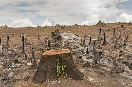
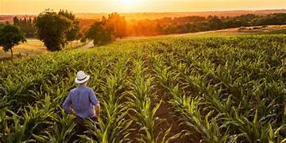
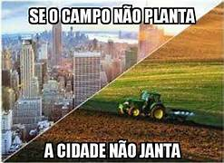

Apresentações

Os acontecimentos recentes
O desmatamento é um dos maiores problemas da atualidade afetando a muitos, incluindo trabalhadores do campo.

A importância do Campo
A importância do campo para a cidade é severamente ignorada por muitos, mas faz total diferença na nossa vida.

Como melhorar a relação entre campo e cidade?
A relação entre o campo e a cidade não é uma das melhores, por isso, é necessário melhorá-la.